binary toy data: binary init + binary prior
Joonsuk Kang
2021-10-19
Last updated: 2021-10-20
Checks: 6 1
Knit directory: mf/
This reproducible R Markdown analysis was created with workflowr (version 1.6.2). The Checks tab describes the reproducibility checks that were applied when the results were created. The Past versions tab lists the development history.
Great! Since the R Markdown file has been committed to the Git repository, you know the exact version of the code that produced these results.
Great job! The global environment was empty. Objects defined in the global environment can affect the analysis in your R Markdown file in unknown ways. For reproduciblity it’s best to always run the code in an empty environment.
The command set.seed(20201010) was run prior to running the code in the R Markdown file. Setting a seed ensures that any results that rely on randomness, e.g. subsampling or permutations, are reproducible.
Great job! Recording the operating system, R version, and package versions is critical for reproducibility.
Nice! There were no cached chunks for this analysis, so you can be confident that you successfully produced the results during this run.
Using absolute paths to the files within your workflowr project makes it difficult for you and others to run your code on a different machine. Change the absolute path(s) below to the suggested relative path(s) to make your code more reproducible.
| absolute | relative |
|---|---|
| ~/Box/2-research/mf | . |
Great! You are using Git for version control. Tracking code development and connecting the code version to the results is critical for reproducibility.
The results in this page were generated with repository version 4f0c099. See the Past versions tab to see a history of the changes made to the R Markdown and HTML files.
Note that you need to be careful to ensure that all relevant files for the analysis have been committed to Git prior to generating the results (you can use wflow_publish or wflow_git_commit). workflowr only checks the R Markdown file, but you know if there are other scripts or data files that it depends on. Below is the status of the Git repository when the results were generated:
Ignored files:
Ignored: .Rhistory
Ignored: .Rproj.user/
Untracked files:
Untracked: altFlash.pdf
Untracked: analysis/alt-flash-nonneg.Rmd
Untracked: analysis/alt-flash-nonneg_largeY.Rmd
Untracked: analysis/alt-flash-normal_largeY.Rmd
Untracked: analysis/altflash_simulation_Yusha.Rmd
Untracked: analysis/bingham.Rmd
Untracked: analysis/bingham_constant.Rmd
Untracked: analysis/demo3_toy.Rmd
Untracked: analysis/demo7_ebfa_hb_g1_K.Rmd
Untracked: analysis/demo7_ebfa_hb_g2_K.Rmd
Untracked: analysis/demo8_splash.Rmd
Untracked: analysis/flashImpute_ML100k.Rmd
Untracked: analysis/flashImpute_ML1M.Rmd
Untracked: analysis/flip_correlation.Rmd
Untracked: analysis/flipping_pdf.Rmd
Untracked: analysis/infinitefactor_toy.Rmd
Untracked: analysis/model_exp_prior_v20201110m.Rmd
Untracked: analysis/model_invgam_prior.Rmd
Untracked: analysis/multiplicative.Rmd
Untracked: analysis/site_libs (joonsukkang@uchicago.edu)/
Untracked: analysis/sliding_correlation.Rmd
Untracked: analysis/sliding_pdf.Rmd
Untracked: analysis/temp.Rmd
Untracked: analysis/toy_Yusha_nonneg_2.Rmd
Untracked: analysis/toy_Yusha_oracle_flashier.Rmd
Untracked: analysis/toy_Yusha_oracle_more seeds.Rmd
Untracked: analysis/toy_p_notfixK.Rmd
Untracked: analysis/y2_NoTargetsByTF.R
Untracked: analysis/y2_eb.Rmd
Untracked: analysis/y2_toy.Rmd
Untracked: analysis/y2_toy_500.Rmd
Untracked: analysis/y2_toy_highd.Rmd
Untracked: analysis/y2_toy_highd_covver.Rmd
Untracked: analysis/y2_toy_lastday_backtosimple.Rmd
Untracked: analysis/y2_toy_master.Rmd
Untracked: analysis/y2_toy_n.Rmd
Untracked: analysis/y2_toy_n_K3.Rmd
Untracked: code/alt-flash.R
Untracked: code/alt-flash_v20210819.R
Untracked: code/model_exp_v20201110.R
Untracked: code/workflowr_codes.R
Untracked: data/eigvals.rds
Untracked: data/hTFtarget_NoTargetsByTF.txt
Untracked: data/metro_results.txt
Untracked: figure/
Untracked: flashImpute.pdf
Untracked: output/.Rapp.history
Untracked: output/Likelihood.gif
Untracked: output/altflash_simulation_Yusha_20211013_res1.rds
Untracked: output/altflash_simulation_Yusha_20211013_res3.rds
Untracked: output/nonneg_v20210824_large_fit.alt.p.rds
Untracked: output/nonneg_v20210824_large_fit.alt.rds
Untracked: output/nonneg_v20210824_large_fit.f.ext.rds
Untracked: output/nonneg_v20210824_large_fit.f.seq.rds
Untracked: output/nonneg_v20210824_large_fit.init.rds
Untracked: output/nonneg_v20210824_small_fit.alt.p.rds
Untracked: output/nonneg_v20210824_small_fit.alt.rds
Untracked: output/nonneg_v20210824_small_fit.f.ext.rds
Untracked: output/nonneg_v20210824_small_fit.f.seq.rds
Untracked: output/nonneg_v20210824_small_fit.init.rds
Untracked: output/tree_toy_altflash_X2_v2021_1012_1309.rds
Untracked: output/tree_toy_altflash_X2n_a_v2021_1012_1309.rds
Untracked: output/tree_toy_altflash_X2n_b_v2021_1012_1309.rds
Untracked: output/tree_toy_altflash_dX2_v2021_1012_1309.rds
Untracked: output/tree_toy_altflash_dX2n_a_v2021_1012_1309.rds
Untracked: output/tree_toy_altflash_dX2n_b_v2021_1012_1309.rds
Untracked: output/tree_toy_altflash_mat2_v2021_1012_1309.rds
Untracked: output/tree_toy_altflash_mat2n_a_v2021_1012_1309.rds
Untracked: output/tree_toy_altflash_mat2n_b_v2021_1012_1309.rds
Untracked: temp-blog/
Untracked: writing/
Unstaged changes:
Deleted: .Rprofile
Deleted: .gitattributes
Modified: .gitignore
Deleted: analysis/Alt-Flash.Rmd
Deleted: analysis/ChoosingW.Rmd
Modified: analysis/alt-flash-normal.Rmd
Deleted: analysis/alt-flash-normal_v20210825.Rmd
Deleted: analysis/concentration.Rmd
Modified: analysis/demo6_ebfa_hb_g1.Rmd
Modified: analysis/demo6_ebfa_hb_g2.Rmd
Modified: analysis/flashier_point_laplace.Rmd
Modified: analysis/model_exp_prior.Rmd
Modified: code/alt-flash_v20211013.R
Modified: code/flashImpute.R
Deleted: output/alt-flash-normal-elbo.pdf
Note that any generated files, e.g. HTML, png, CSS, etc., are not included in this status report because it is ok for generated content to have uncommitted changes.
These are the previous versions of the repository in which changes were made to the R Markdown (analysis/binary_toy_binary_altflash.Rmd) and HTML (docs/binary_toy_binary_altflash.html) files. If you’ve configured a remote Git repository (see ?wflow_git_remote), click on the hyperlinks in the table below to view the files as they were in that past version.
| File | Version | Author | Date | Message |
|---|---|---|---|---|
| Rmd | 4f0c099 | joonsukkang | 2021-10-20 | binary alt-flash on binary toy |
observations
to do
- first factor too strong?
- how to select initial binary L? now, using cutoff 0.5–> need to be more adaptive to the structure
some functions
Initialize binary matrix L and scale matrix D
# Initialize binary matrix L and scale matrix D
INIT.L.Bin <- function(Y, max.K=20, max.K.search=50, verbose=1, set.scale.min=1e-10){
n <- nrow(Y)
# residual Y
Yres <- Y
# root factor
u <- eigen(Yres)$vectors[,1]
u <- u * sign(u[which.max(abs(u))]) # flip if the one with largest size has a negative sign
u <- u/max(u) # rescale so that the largest is 1
u <- as.numeric(u>=0.5) # binarize u with 0.5 as cutoff (u<0 also classified 0)
L <- matrix(u, ncol=1)
D <- D.qp(Y, A.l=L, B.l=crossprod(L),
A.f=L, B.f=crossprod(L), scale.min=set.scale.min, print.scale=FALSE)
Yres <- Yres - L %*% D %*% t(L)
# add factors
for (k in 2:max.K.search){
## find direction
u <- eigen(Yres)$vectors[,1]
u <- u * sign(u[which.max(abs(u))]) # flip if the one with largest size has a negative sign
u <- u/max(u) # rescale so that the largest is 1
u <- as.numeric(u>=0.5) # binarize u with 0.5 as cutoff (u<0 also classified 0)
## find scale
L <- cbind(L, matrix(u, ncol=1))
D <- D.qp(Y, A.l=L, B.l=crossprod(L),
A.f=L, B.f=crossprod(L), scale.min=set.scale.min, print.scale=FALSE)
if(verbose==2){print(paste0(k,'-th factor fitted'))}
if(min(diag(D))<set.scale.min*10) {
knull <- (diag(D) < set.scale.min*10)
L <- L[,!knull]
D <- D.qp(Y, A.l=L, B.l=crossprod(L),
A.f=L, B.f=crossprod(L), scale.min=set.scale.min, print.scale=FALSE)
if(verbose==2){print(paste0(k,'-th factor dropped'))}
}
if(ncol(L) == max.K) break
Yres <- Y - L %*% D %*% t(L)
}
if(verbose==1 | verbose==2){print(paste0(ncol(L), ' factors fitted'))}
out.list <- list(L=L, D=D)
return(out.list)
}some more functions
library(tidyverse)── Attaching packages ─────────────────────────────────────── tidyverse 1.3.1 ──✓ ggplot2 3.3.5 ✓ purrr 0.3.4
✓ tibble 3.1.4 ✓ dplyr 1.0.7
✓ tidyr 1.1.3 ✓ stringr 1.4.0
✓ readr 2.0.1 ✓ forcats 0.5.1── Conflicts ────────────────────────────────────────── tidyverse_conflicts() ──
x dplyr::filter() masks stats::filter()
x dplyr::lag() masks stats::lag()library(gridExtra)
Attaching package: 'gridExtra'The following object is masked from 'package:dplyr':
combine# plot posterior mean of L and F
plotLF <- function(A.l, A.f, title){
K <- ncol(A.l)
n <- nrow(A.l)
data.frame(L=c(A.l),
F=c(A.f),
factor=rep(1:K, each=n),
x=rep(1:n, times=K)) %>%
mutate(factor=as.factor(factor)) -> df.plot
df.plot %>%
ggplot()+
geom_line(aes(x=x, y=L, group=factor, col=factor))+
facet_wrap(~factor, scales='free_y') -> figL
df.plot %>%
ggplot()+
geom_line(aes(x=x, y=F, group=factor, col=factor))+
facet_wrap(~factor, scales='free_y') -> figF
grid.arrange(figL, figF, nrow=2,
top=title)
}
plotL <- function(A.l, title){
K <- ncol(A.l)
n <- nrow(A.l)
data.frame(L=c(A.l),
factor=rep(1:K, each=n),
x=rep(1:n, times=K)) %>%
mutate(factor=as.factor(factor)) -> df.plot
df.plot %>%
ggplot()+
geom_line(aes(x=x, y=L, group=factor, col=factor))+
facet_wrap(~factor, scales='free_y') +ggtitle(title)-> figL
print(figL)
}
# find optimal scaling D by quadratic programming approach
D.qp <- function(Y, A.l, B.l, A.f, B.f, scale.min, print.scale=TRUE){
n <- nrow(A.l); K <- ncol(A.l)
D <- B.l * B.f
d <- rep(0, K); for (k in 1:K){d[k] <- as.numeric(t(A.l[,k]) %*% Y %*% A.f[,k]) }
qp <- quadprog::solve.QP(Dmat=D, dvec=d, Amat=diag(1,nrow=K), bvec=rep(scale.min,K))
scale <- qp$solution
if(print.scale){print(scale)}
return(diag(scale, nrow=K)) # return the scale matrix D
}results
setwd("~/Box/2-research/mf")
source("code/alt-flash_v20211020.R")binary_toy <- readRDS(url("https://raw.githubusercontent.com/joonsukkang/mf/master/data/binary_toy.rds"))
L0 <- binary_toy$L0
F0 <- binary_toy$F0
X0 <- L0 %*% t(F0)set.seed(1)
X <- X0 + matrix(rnorm(800*2000, 0, 0.5), nrow=800, ncol=2000)
XXt <- X%*%t(X)
Y <- XXteigendecomposition
eigY <- eigen(Y)
plotL(eigY$vectors[,1:12], 'eigvectors of XXt')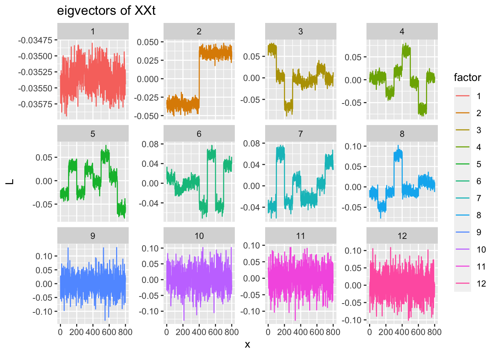
eigY$values[1:20] [1] 6920830.534 11479.352 6134.921 5976.844 5927.495 5893.851
[7] 5760.232 5571.357 1320.853 1307.141 1295.663 1283.125
[13] 1277.331 1275.670 1268.622 1251.953 1244.321 1239.592
[19] 1237.042 1229.603XXt
# using Y
Y <- XXt
temp.obj <- INIT.L.Bin(Y, max.K=20, max.K.search=50, verbose=1, set.scale.min=1e-10) [1] "6 factors fitted"plotL(temp.obj$L, title='initialized binary L')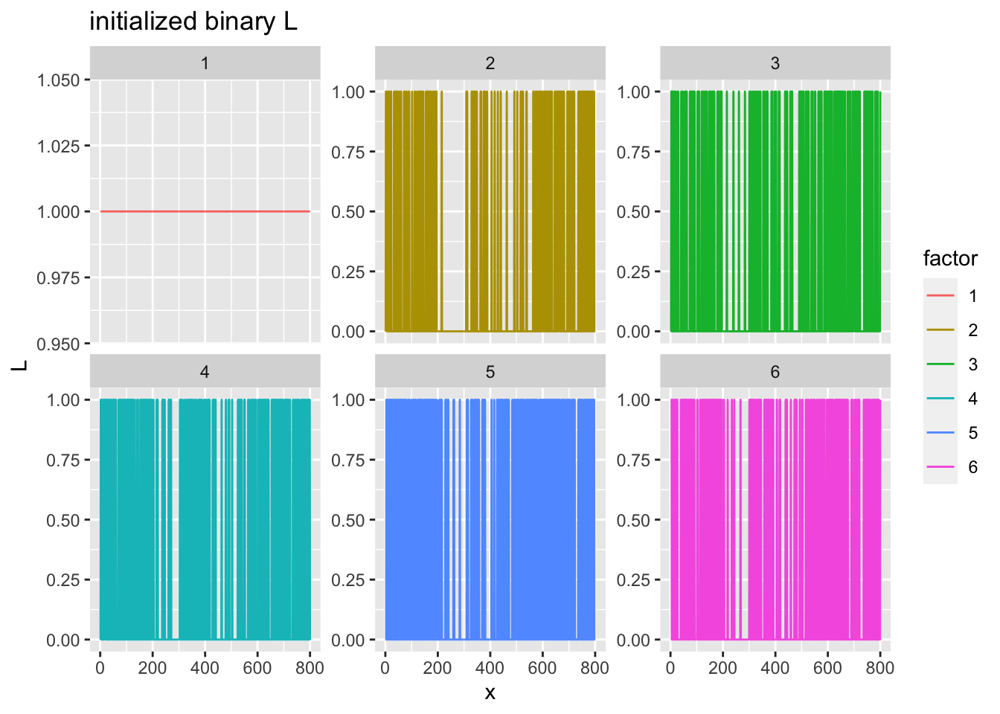
fit.init <- INIT.L(Y=Y, L=temp.obj$L, D=temp.obj$D, g.pf='binary')
fit.alt <- alt.flash(fit.init, g.common=TRUE)[1] "backfit completed; elbo=-3261403.06561116"print(fit.alt$scales)[1] 6845468.47 21382.24 32176.63 30141.63 31061.60 23412.67plotLF(fit.alt$A.l, fit.alt$A.f, 'result: binary alt-flash')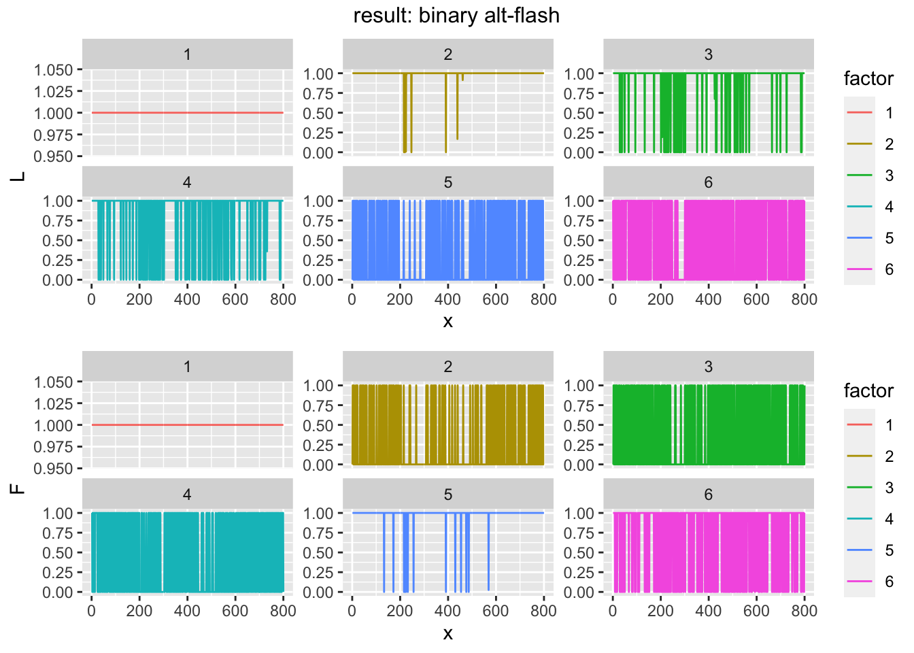
XXt, without first factor
Y <- eigY$vectors[,-1] %*% diag(eigY$values[-1]) %*% t(eigY$vectors[,-1])
temp.obj <- INIT.L.Bin(Y, max.K=20, max.K.search=50, verbose=1, set.scale.min=1e-10) [1] "15 factors fitted"plotL(temp.obj$L, title='initialized binary L')
fit.init <- INIT.L(Y=Y, L=temp.obj$L, D=temp.obj$D, g.pf='binary')
fit.alt <- alt.flash(fit.init)[1] "drop 1 factor(s); 14 factor(s) remaining"
[1] "drop 2 factor(s); 12 factor(s) remaining"
[1] "drop 1 factor(s); 11 factor(s) remaining"
[1] "backfit completed; elbo=-2937975.91326294"print(fit.alt$scales) [1] 972.6602 5713.5475 5410.1120 5690.2320 945.8958 5344.3711 5618.6861
[8] 5331.7445 5765.3588 5305.9762 962.8004plotLF(fit.alt$A.l, fit.alt$A.f, 'result: binary alt-flash w/o first factor')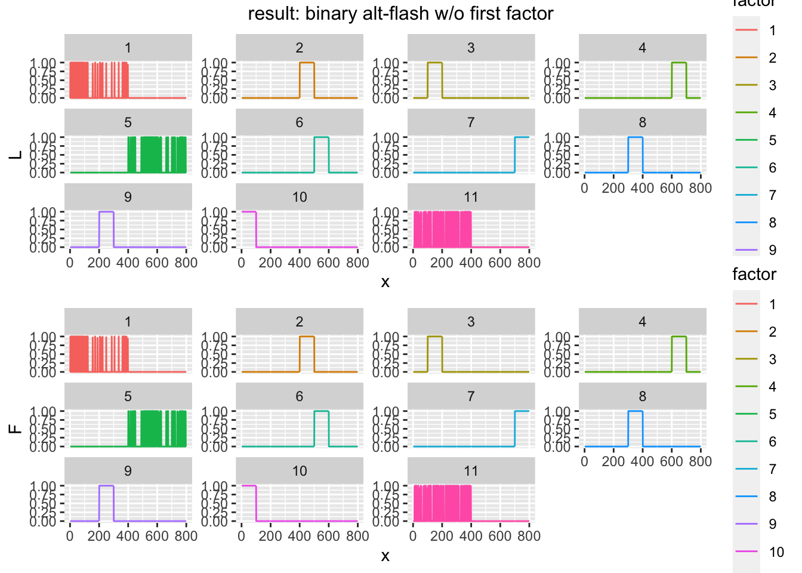
XXt, with half-sized F1
F0h <- F0
F0h[,1] <- F0h[,1]/2
pheatmap::pheatmap(F0, cluster_rows=FALSE, cluster_cols = FALSE)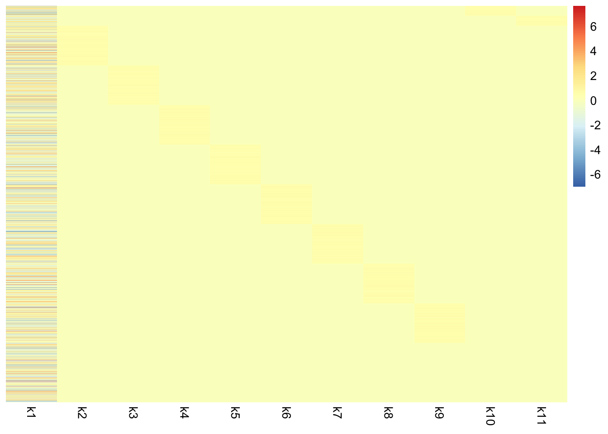
pheatmap::pheatmap(F0h, cluster_rows=FALSE, cluster_cols = FALSE)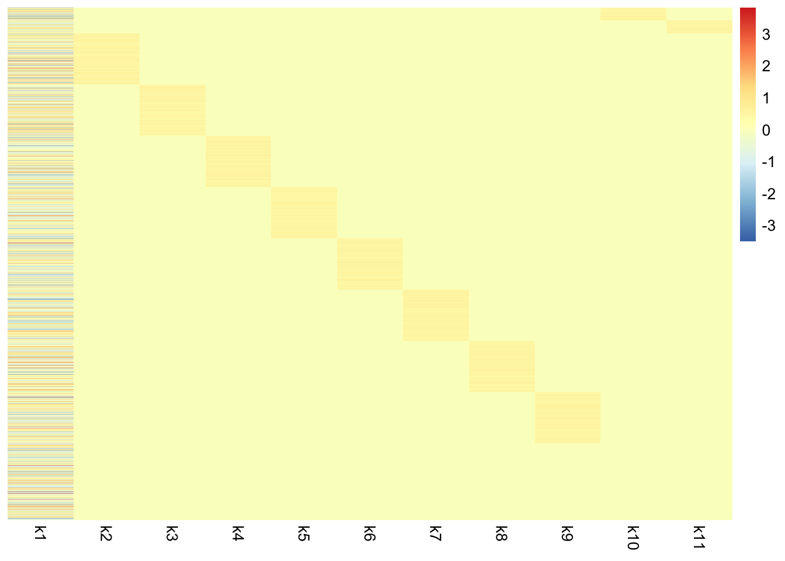
set.seed(1)
X <- L0 %*% t(F0h) + matrix(rnorm(800*2000, 0, 0.5), nrow=800, ncol=2000)
XXt <- X%*%t(X)
Y <- XXt
plotL(eigen(Y)$vectors[,1:12], 'eigvectors of XXt, half-sized F1')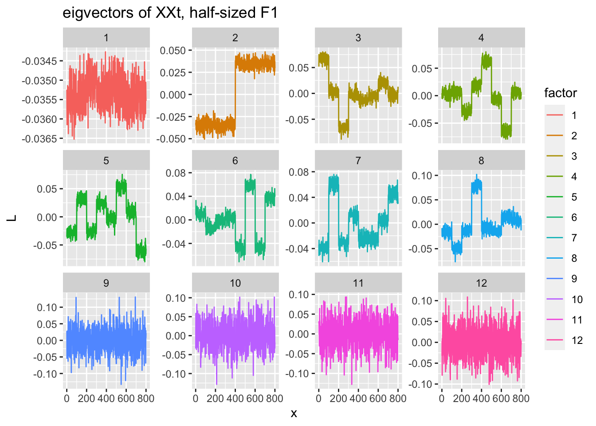
temp.obj <- INIT.L.Bin(Y, max.K=20, max.K.search=50, verbose=1, set.scale.min=1e-10) [1] "4 factors fitted"plotL(temp.obj$L, title='initialized binary L')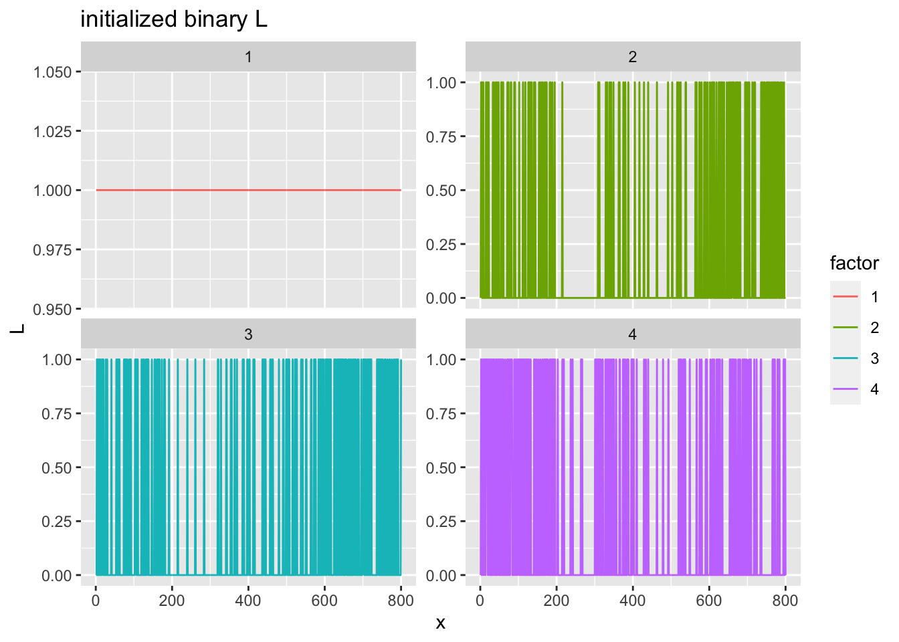
fit.init <- INIT.L(Y=Y, L=temp.obj$L, D=temp.obj$D, g.pf='binary')
fit.alt <- alt.flash(fit.init)[1] "backfit completed; elbo=-3164293.35357309"print(fit.alt$scales)[1] 1705690.21 15256.28 21359.96 18208.66plotLF(fit.alt$A.l, fit.alt$A.f, 'result: binary alt-flash w/o first factor')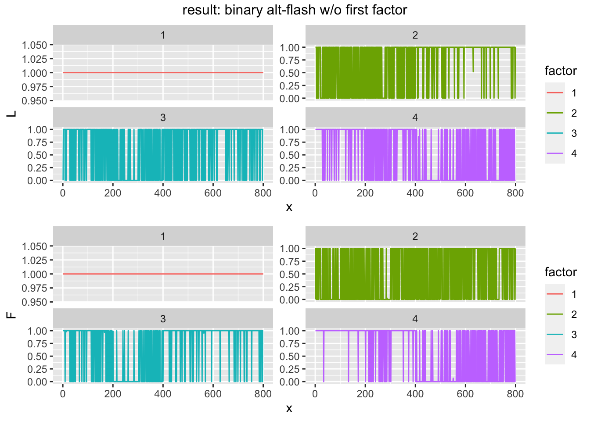
XXt, with oracle init
# using Y
#Y <- eigY$vectors %*% diag(eigY$values) %*% t(eigY$vectors)
Y <- XXt
D <- D.qp(Y=Y, A.l=L0, B.l=crossprod(L0),
A.f=L0, B.f=crossprod(L0),
scale.min=1e-10) [1] 2159.82282 76.70924 69.69011 25.09573 53.38106 39.39674
[7] 48.73732 73.95808 65.86498 11.21989 16.73114plotL(L0, title='oracle binary L')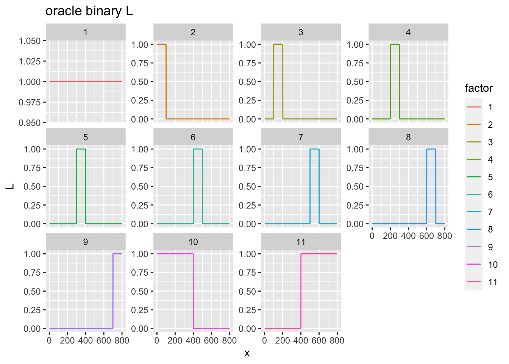
fit.init <- INIT.L(Y=Y, L=L0, D=D, g.pf='binary')
fit.alt <- alt.flash(fit.init, g.common=TRUE)[1] "backfit completed; elbo=-3047838.54460996"print(fit.alt$scales) k1 k2 k3 k4 k5 k6
1692810.411 8257.598 7652.023 11179.406 7535.814 9525.800
k7 k8 k9 k10 k11
7592.574 7941.917 7690.342 19647.966 18060.401 plotLF(fit.alt$A.l, fit.alt$A.f, 'result: binary alt-flash with oracle init')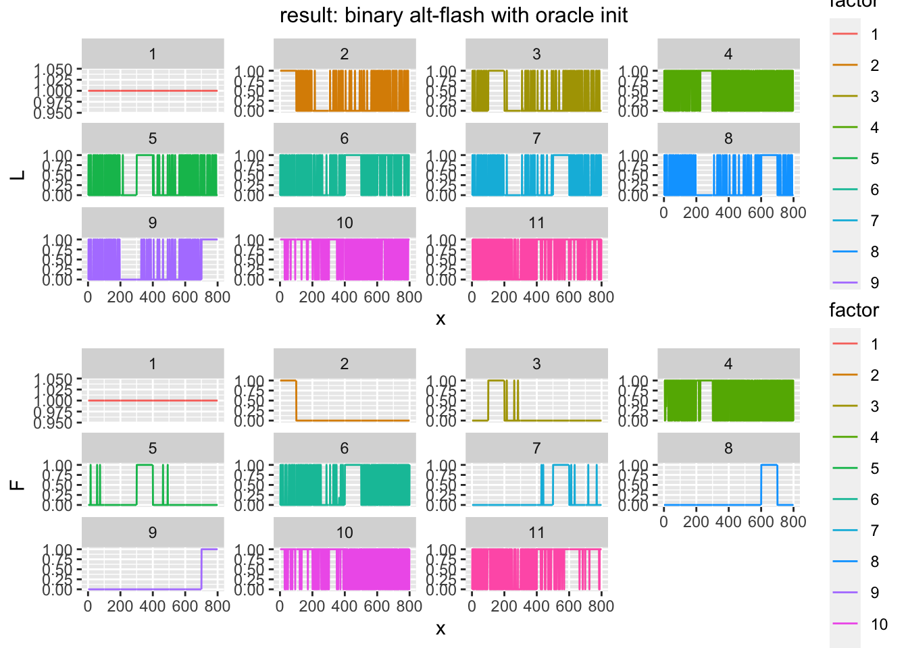
(recap) nonnegative initialization + point-exponential fit
temp.obj <- INIT.L.NonNeg(Y, verbose=1) # initialize directions (L)
Ls <- scaleL.qp(Y, temp.obj$L, scale.min=1e-8, print.scale=FALSE)
plotL(Ls$Ls, title='nonneg initialized L')
fit.init <- INIT.L(init.L=Ls$Ls, Y=Y, g.pf='point_exponential')
fit.alt <- alt.flash(fit.init)
print(fit.alt$scales)
plotL(fit.alt$A.l, 'result: alt-flash with nonneg init')some more seeds
exploring other rules… not completed
# Initialize binary matrix L and scale matrix D
INIT.L.Bin <- function(Y, max.K=20, max.K.search=50, verbose=1, set.scale.min=1e-10){
n <- nrow(Y)
L <- matrix(1, nrow=n, ncol=1)
D <- D.qp(Yres, A.l=U, B.l=crossprod(U),
A.f=U, B.f=crossprod(U), scale.min=set.scale.min, print.scale=FALSE)
Yres <- Y - L %*% D %*% t(L) # residual Y
for (k in 2:max.K.search){
u <- eigen(Yres)$vectors[,1]
u <- u * sign(u[which.max(abs(u))]) # flip if the one with largest size has a negative sign
u <- u/max(u) # rescale so that the largest is 1
u <- as.numeric(u>mean(u[u>0]))
U <- matrix(u, ncol=1)
D <- D.qp(Yres, A.l=U, B.l=crossprod(U),
A.f=U, B.f=crossprod(U), scale.min=set.scale.min, print.scale=FALSE)
if(as.numeric(D)<set.scale.min*2) break
L <- cbind(L, U)
Yres <- Yres - U %*% D %*% t(U)
}
pheatmap::pheatmap(L, cluster_rows=FALSE, cluster_cols=FALSE)
D <- D.qp(Y, A.l=L, B.l=crossprod(L),
A.f=L, B.f=crossprod(L), scale.min=set.scale.min, print.scale=FALSE)
keep.idx <- c(1, sort(order(diag(D)[-1], decreasing=TRUE)[1:max.K])+1) # always keep the root factor
D <- diag(diag(D)[keep.idx])
L <- L[,keep.idx]
if(verbose==1 | verbose==2){print(paste0(ncol(L), ' factors fitted'))}
out.list <- list(L=L, D=D)
return(out.list)
}
sessionInfo()R version 4.1.1 (2021-08-10)
Platform: aarch64-apple-darwin20 (64-bit)
Running under: macOS Big Sur 11.6
Matrix products: default
LAPACK: /Library/Frameworks/R.framework/Versions/4.1-arm64/Resources/lib/libRlapack.dylib
locale:
[1] en_US.UTF-8/en_US.UTF-8/en_US.UTF-8/C/en_US.UTF-8/en_US.UTF-8
attached base packages:
[1] compiler stats graphics grDevices utils datasets methods
[8] base
other attached packages:
[1] ashr_2.2-47 ebnm_0.1-50 gridExtra_2.3 forcats_0.5.1
[5] stringr_1.4.0 dplyr_1.0.7 purrr_0.3.4 readr_2.0.1
[9] tidyr_1.1.3 tibble_3.1.4 ggplot2_3.3.5 tidyverse_1.3.1
loaded via a namespace (and not attached):
[1] fs_1.5.0 lubridate_1.7.10 RColorBrewer_1.1-2 httr_1.4.2
[5] rprojroot_2.0.2 tools_4.1.1 backports_1.2.1 utf8_1.2.2
[9] R6_2.5.1 irlba_2.3.3 DBI_1.1.1 colorspace_2.0-2
[13] withr_2.4.2 tidyselect_1.1.1 git2r_0.28.0 cli_3.0.1
[17] rvest_1.0.1 xml2_1.3.2 labeling_0.4.2 horseshoe_0.2.0
[21] scales_1.1.1 SQUAREM_2021.1 quadprog_1.5-8 mixsqp_0.3-43
[25] digest_0.6.27 rmarkdown_2.10 deconvolveR_1.2-1 pkgconfig_2.0.3
[29] htmltools_0.5.2 dbplyr_2.1.1 fastmap_1.1.0 invgamma_1.1
[33] highr_0.9 rlang_0.4.11 readxl_1.3.1 rstudioapi_0.13
[37] generics_0.1.0 farver_2.1.0 jsonlite_1.7.2 REBayes_2.2
[41] magrittr_2.0.1 Matrix_1.3-4 Rcpp_1.0.7 munsell_0.5.0
[45] fansi_0.5.0 lifecycle_1.0.0 stringi_1.7.4 whisker_0.4
[49] yaml_2.2.1 grid_4.1.1 promises_1.2.0.1 crayon_1.4.1
[53] lattice_0.20-44 haven_2.4.3 splines_4.1.1 hms_1.1.0
[57] knitr_1.33 pillar_1.6.2 reprex_2.0.1 glue_1.4.2
[61] evaluate_0.14 trust_0.1-8 modelr_0.1.8 vctrs_0.3.8
[65] tzdb_0.1.2 httpuv_1.6.2 cellranger_1.1.0 gtable_0.3.0
[69] assertthat_0.2.1 xfun_0.25 broom_0.7.9 later_1.3.0
[73] truncnorm_1.0-8 pheatmap_1.0.12 workflowr_1.6.2 ellipsis_0.3.2